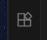

Click the Extensions icon in the sidebar on the left. It is the one that has three connected squares, plus a tilted fourth square floating in the upper right:
Inside the extension list that appears, type Java in the “Search Extensions†box:
One of the results, probably the very first one, will be the Extension Pack for Java from Microsoft. The name may be truncated, as in the picture below:

...but if it is, you can click the extension to see the full details and make sure you have the right one:

âš ï¸ CAUTION Be sure you getting Java, not JavaScript! The two are very different languages that just happen to have similar names.
(The latter was originally called “LiveScript,†but they changed the name to “JavaScript†at the last second because they heard that something big named “Java”  was coming out soon, and they wanted to get in on the action. See Wikipedia on the history of JavaScript for more details )
Both languages are useful and widely used, and you can install both in VS Code if you want to. But Java is the one you will need for this class.

You might not see exactly the same commands as the one in the screenshot. That is OK! Just make sure there is a large number of commands that start with “Java:”, whatever the commands are.
- Try quitting and reopening Visual Studio Code again and repeat step 6.
- If that doesn’t work, go back to step 4 and try it again.
- If that still doesn’t work, ask the instructor or a preceptor for help.
-
Search for the setting named “Auto Save†using the “Search settings†box. Set the dropdown to onFocusChange. This way, every time you click the run button, it will save your code first.

-
We want to disable “hybrid mode,†which is a temperamental VS Code option that sometimes causes projects to not run or load properly. Search for “launch mode†in the settings search box, then set Java > Server: Launch Mode to Standard:
-
Finally, search for “generatesMetadataFilesAtProjectRoot†in the settings search box (you can copy and paste that), and make sure that “Generates Metadata Files At Project Root†is enabled (i.e. the checkbox is checked):

-
After changing that last setting, you may get this message in the lower right corner:
âš ï¸ Java Language Server configuration changed, please restart Visual Studio Code. Source: Language Support for Java(TM) by Red Hat...Click “Restart Now.†(Don’t worry, VS Code should restart quickly.) If you don’t see this message, quit and reopen VS Code just to be safe.